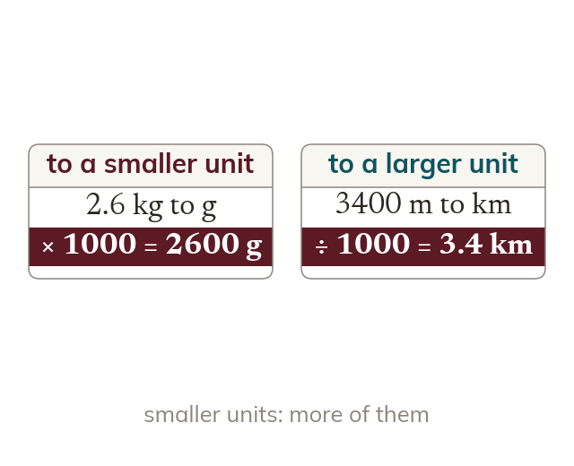

Converting between metric units
Metric units convert by powers of ten, like 1000 g = 1 kg. Converting to a smaller unit multiplies. Converting to a larger unit divides.
Metric units convert by powers of ten - 10 mm = 1 cm, 100 cm = 1 m, 1000 m = 1 km, 1000 ml = 1 l, 1000 g = 1 kg, 1000 kg = 1 t. Converting to a smaller unit multiplies; converting to a larger unit divides.